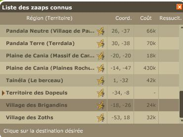
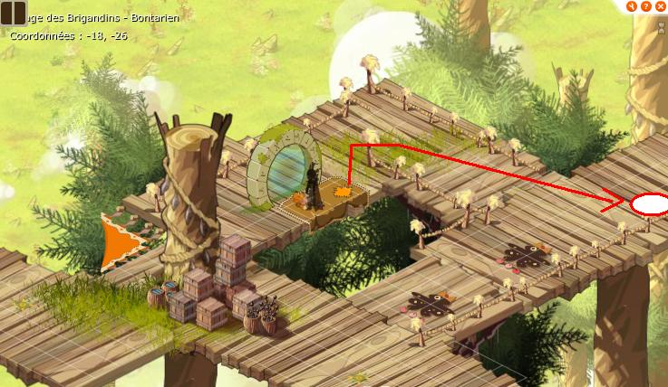
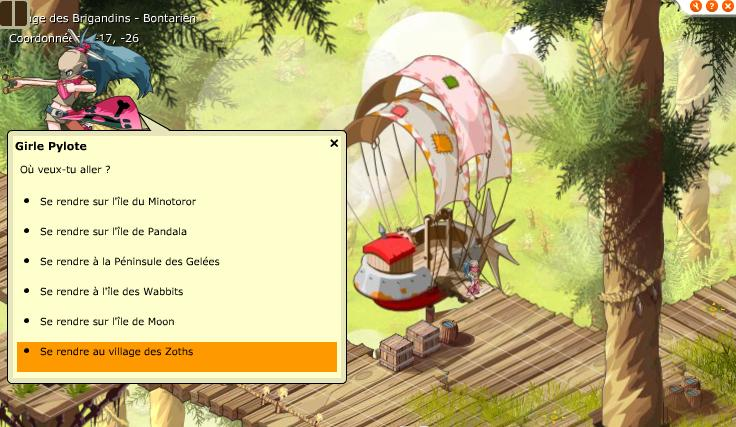
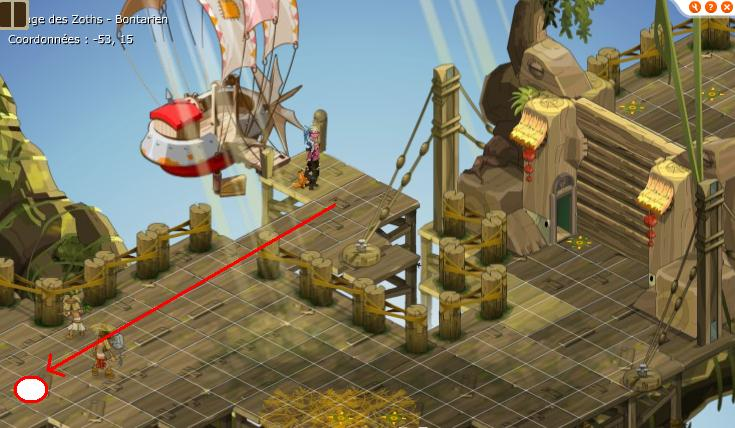
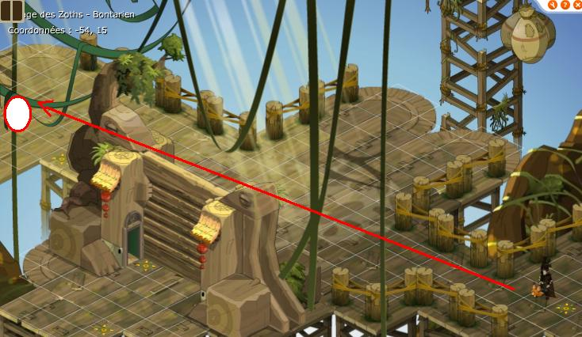
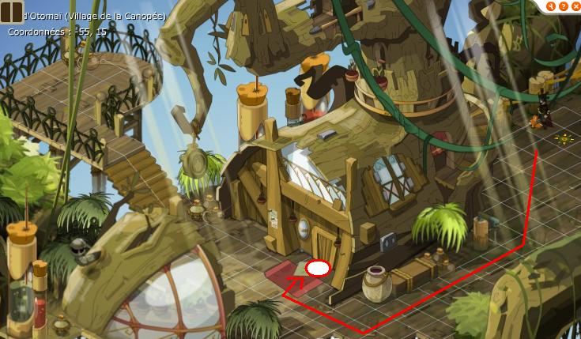
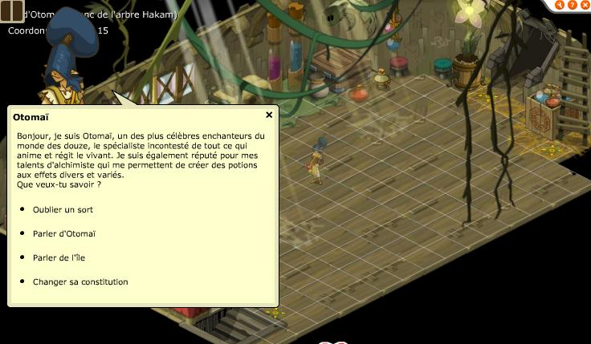

Menu barbok'you

Un petit dossier pour vous expliquer comment remettre vos points de caractéristiques et éventuellement vos sorts, puis, plus généralement, de mieux connaître cette île qu'est Otomaï. Tout d'abord pour vous y rendre il faut effectuer une quête : Se rendre sur l'île d'Otomaï, les devs ont mis moins de monstres à présent mais en dessous du niveau 30 n'espérez pas réussir, un ami ayant déjà fait la quête pourra vous accompagner si besoin. Les techniques utilisant les potions de foyer de guilde pour venir sur l'île ne permettent pas de sauvegarder le zaap, faites la quête donc ! Les quelques endroits à connaître sur l'île sont : Le zaap en -46/18 Le phénix en -58/18 Il y a également 4 scaéroplanes sur l'île pour se déplacer plus rapidement, pour pouvoir en profiter il faudra faire une quête à chaque scaéroplane : La Vengeance du Kito Un autre moyen de transport La vengeance de Peggy la Porkass Scaéroplane à très grande vitesse |
|---|
Comment remettre un sort à 0 sans dépenser de kamas ? Tout dépend de votre niveau, il suffit de faire des donjons présents sur l'île. Entre le niveau 30 et 60 : Grotte Hesque Entre le niveau 61 et 80 : Grotte Hesque et l'Arche d'Otomaï Entre le niveau 81 et 100 : Grotte Hesque, l'Arche d'Otomaï et Goulet du Rasboul Entre le niveau 101 et 141 : Grotte Hesque, l'Arche d'Otomaï, Goulet du Rasboul et Laboratoire du Tynril Au delà du niveau 141 : Grotte Hesque, l'Arche d'Otomaï, Goulet du Rasboul , Laboratoire du Tynril et Canopée du Kimbo A chaque fin de donjon vous obtenez une relique qui certifie que vous avez bien fait ce donjon. Contre le nombre suffisant de reliques vous pouvez remettre un sort à zéro mais vous perdez alors les reliques, et il vous faudra refaire les donjons pour oublier d'autres sorts. Allez parler à Otomaï pour oublier un sort une fois les reliques nécessaires en votre possession. |
|---|
Mais où est Otomaï ? Otomaï est tout en haut de l'arbre au milieu de l'ile vous pouvez soit traverser tout l'arbre mais cela prend un peu de temps, une fois en haut allez 2 maps à gauche puis entrez dans la maison. |
|---|
|  |
|---|
Prenez un alignement, de préference celui du village des brigandins si vous êtes pressé, et allez sauver le zaap des brigandins en -18/-26 |
|   |
|---|
Map de droite puis allez village zoth |
|   |
|---|
Allez à gauche |
|   |
|---|
Entrez dans la maison et vous pouvez discuter avec Otomaï, il vous explique ce qu'il faut faire comme moi ici ;) |
Un autre secret est présent sur l'ile il s'agit de L'Antre du Kralamour |
|---|
Dofus est un MMORPG édité par Ankama." Barbok " est un site non-officiel sans aucun lien avec Ankama.
Toutes les illustrations sont la propriété d'Ankama Studio et de Dofus. Le contenu de ce site a été rédigé initialement par Immortal, il ne s'agit que d'une remise en ligne effectuée par Eternal Games.